Cleaner pets. Zero water. Complete care.
Wash Whiskers develops rinse-free grooming solutions for dogs, cats, small pets and birds. They are gentle on animals, safe for the hands that use them and made without animal-harming ingredients.
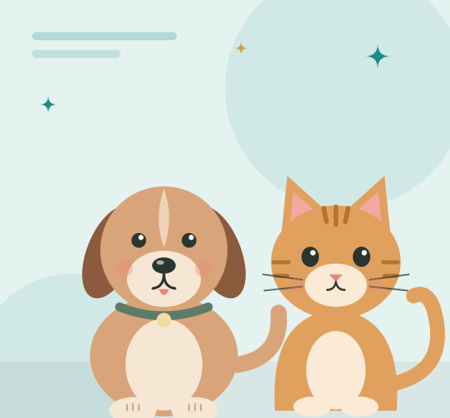
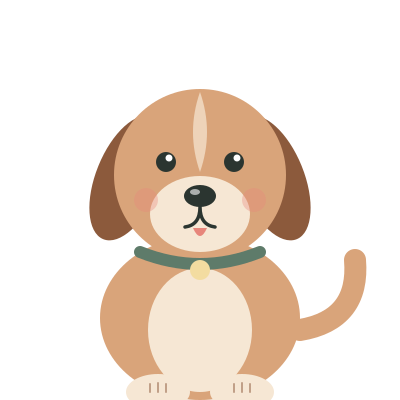
Rethinking pet hygiene, one waterless groom at a time.
Wash Whiskers is a pet care company focused on a simple idea: pets can be kept clean, fresh and healthy without the stress of water baths. We develop rinse-free foams, mists, powders and wipes that clean effectively while protecting the coat's natural oils.
Every formula is designed with two groups in mind. Animals need gentle, lick-safe care, and the people who groom them need products that are safe on their hands, with no dryness, irritation or residue.
Our Mission
To make pet hygiene simple, stress-free and water-free for every home and every professional.
Our Vision
To be the most trusted name in safe, sustainable and cruelty-free pet care.
Four commitments behind every product.
From research to final formulation, every Wash Whiskers product is measured against the same four standards.
Water-free cleaning
Rinse-free formulas that clean effectively and save litres of water with every groom.
Safe for human hands
Dermatologically tested on human skin, so there's no dryness, stinging or residue.
Safe for animals
pH balanced and lick-safe, with no parabens, sulphates or harsh alcohol.
Cruelty-free
Never tested on animals and free from ingredients that harm wildlife.
Eight categories. Thirty-two specialised lines.
A complete waterless care system covering every pet type and every grooming need. Select a category to see its product lines.
Dog Care
Rinse-free foams, dry powders and wipes that lift dirt, oil and odour straight from the coat — no tub, no hose, no soggy dog shaking all over your sofa.
Waterless Foam Shampoo
A cloud-soft foam you massage in and towel off. It loosens grime and neutralises smell in about five minutes.
- Rinse-free: massage in, towel off
- Coconut-derived cleansers, no sulphates
- Leaves no residue on your palms
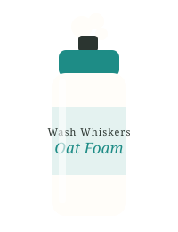
Oat & Coconut Foam200 ml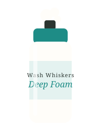
Deep Coat Foam250 mlDry Bath Powder
A fine, talc-free powder that soaks up oil and odour, then brushes straight out of the coat.
- Talc-free arrowroot & kaolin base
- Brush in, brush out — no rinse
- Great for senior or anxious dogs
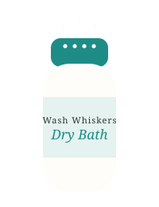
Arrowroot Dry Bath120 g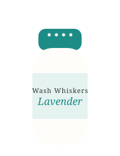
Lavender Dry Bath120 gGrooming Wipes
Thick plant-fibre wipes soaked in a mild cleanser, for a quick full-body refresh after walks.
- Biodegradable bamboo fibre
- Alcohol-free and fragrance-light
- Extra-large 20 × 25 cm sheets
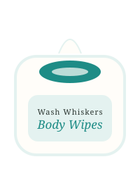
Bamboo Body Wipes60 wipes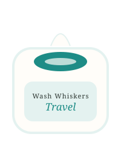
Travel Wipe Pack20 wipesCoat Mist & Detangler
A light leave-in mist that refreshes, conditions and helps the brush glide through knots.
- Aloe and oat extract
- Anti-static, adds soft shine
- Safe to use daily
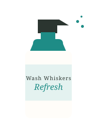
Aloe Refresh Mist200 ml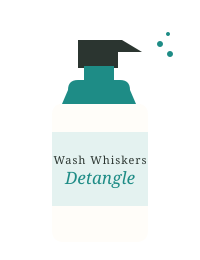
Silk Detangle Spray200 mlCat Care
Cats hate water — so we took it out. Gentle mousses, wipes and powders let you freshen your cat in a few calm strokes, with formulas safe if they lick their fur.
No-Rinse Mousse
A whisper-quiet mousse, with no spray hiss to scare your cat. It lifts dander and greasy patches.
- Quiet pump, no aerosol hiss
- Free from essential oils
- Lick-safe ingredients
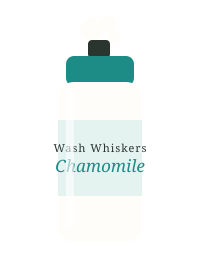
Chamomile Mousse150 mlFur Wipes
Soft, stroke-like wipes that feel like grooming from their mother — a calm way to clean.
- Ultra-soft and lint-free
- Removes dander and loose fur
- pH balanced for cat skin
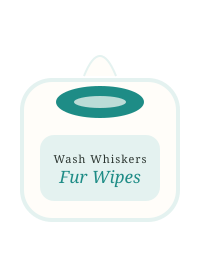
Velvet Fur Wipes50 wipes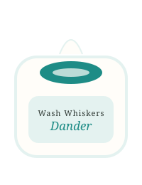
Dander-Less Wipes50 wipesDry Shampoo Powder
An extra-fine powder for long-haired breeds that soaks up oil and prevents matting.
- Ideal for Persian & Maine Coon
- Absorbs oil at the roots
- Talc and fragrance free
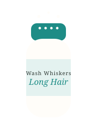
Long-Hair Dry Shampoo100 g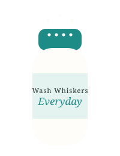
Everyday Dry Shampoo100 gGrooming Mitts
Silicone-nub mitts that pair with our mousse to massage clean and catch loose fur.
- Feels like petting, not brushing
- Washable food-grade silicone
- Collects shedding fur
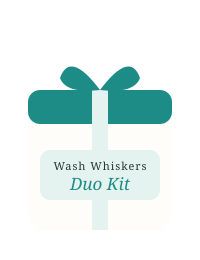
Mitt + Mousse DuoSet of 2Puppy & Kitten
Little ones should not be fully bathed in water too early. Our extra-mild, tear-free range keeps puppies and kittens clean from 8 weeks old.
Tear-Free Foam
Our mildest foam: no stinging near the eyes, no strong scent, just a soft clean.
- Tear-free formula
- Fragrance-free
- Dermatologically gentle
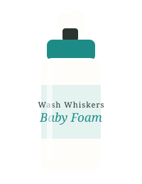
Baby Paws Foam150 mlGentle Wipes
Thin, extra-soft wipes for messy faces, bottoms and accidents during training.
- 99% purified-water base
- Plant-fibre and compostable
- Ideal for potty-training clean-ups
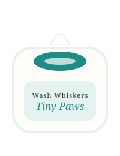
Tiny Paws Wipes80 wipes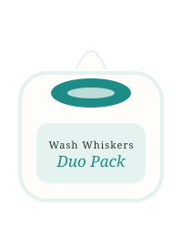
Clean-Up Wipes Duo2 × 80 wipesBaby Coat Powder
Silky cornstarch powder that keeps young coats dry, fluffy and comfortable.
- Cornstarch based, no talc
- Soothes sensitive skin
- Light baby-fresh scent
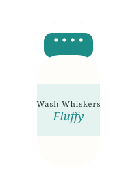
Fluffy Coat Powder80 gFirst Grooming Kits
Everything for a calm first grooming routine, in one gift-ready box.
- Foam, wipes, mitt and guide
- Great new-pet gift
- Recyclable gift box
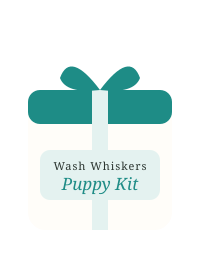
Puppy Starter Kit4 items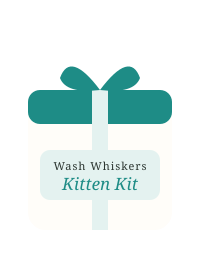
Kitten Starter Kit4 itemsSmall Pets
Rabbits, guinea pigs and hamsters should almost never be bathed in water. Our spot-clean range is made for delicate skin and quick-to-chill small bodies.
Rabbit Spot-Clean
A dry foam for bunny bottoms and soiled patches, without the stress or chill of a bath.
- Spot-clean, no soaking
- Safe for delicate rabbit skin
- Unscented
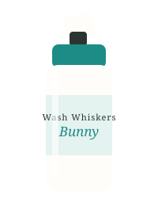
Bunny Spot Foam100 mlGuinea Pig Care
Mild wipes and a refresh mist for longer-haired cavies such as Peruvians and Abyssinians.
- Gentle on whorls and rosettes
- Refreshes without wetting
- Vet-reviewed ingredients
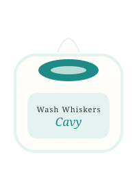
Cavy Care Wipes40 wipes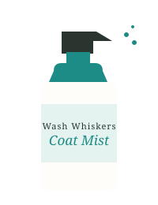
Cavy Coat Mist100 mlHamster & Chinchilla Dust
Fine natural dust baths that copy how desert rodents clean themselves in the wild.
- Natural volcanic-ash blend
- Absorbs oil from dense fur
- Dust-controlled for small lungs
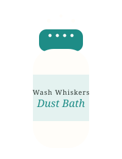
Desert Dust Bath500 g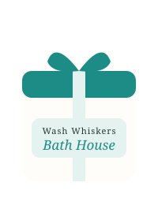
Dust Bath House1 pieceFerret Freshening
Ferrets have a natural musk — bathing too often makes it worse. Freshen gently instead.
- Reduces musky odour
- Does not strip natural oils
- Fragrance-light formula
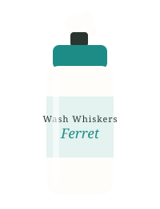
Ferret Fresh Foam100 mlBird Care
Feather-safe mists and wipes that keep birds' plumage glossy and their perches clean, with no heavy oils, no fumes and nothing harmful if they preen it.
Feather Bath Mist
An ultra-fine mist that copies soft rain, so preening comes naturally and feathers stay glossy.
- Preen-safe, no oils
- Aloe and purified water
- Encourages natural preening
Beak & Foot Wipes
Small, gentle wipes for sticky beaks after fruit and dusty feet after perching.
- Fragrance-free
- Food-safe ingredients
- Small, easy-grip size
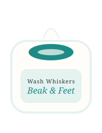
Beak & Feet Wipes40 wipesPerch & Cage Cleanse
A plant-based, fume-free cleaner for perches, toys and cage bars.
- No fumes, safe around birds
- Plant enzyme cleaners
- No rinse needed
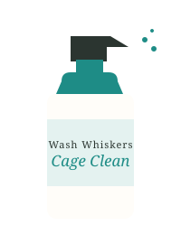
Cage Clean Spray500 ml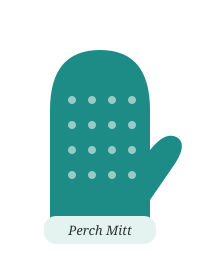
Perch Scrub Mitt1 pieceBird Care Kits
Bundled routines for new bird parents and gifting.
- Mist, wipes and cage spray
- Illustrated care card
- Plastic-free packing
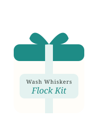
Happy Flock Kit3 itemsPaw Care
Paws carry the outside in. Our foaming paw cleaners and balms clean between the toes and protect pads, and none of it needs a sink.
Paw Cleansing Foam
A foaming cleanser that reaches between toes and pads, then wipes away with a towel.
- Reaches between toes
- Removes mud, salt and pollen
- Lick-safe
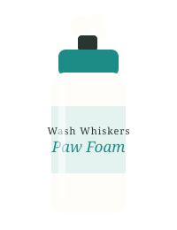
After-Walk Paw Foam150 ml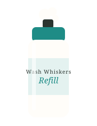
Paw Foam Refill500 mlPaw Wipes
Textured, extra-thick wipes made for quick paw clean-ups at the door.
- Textured scrub side
- Pop-up dispenser lid
- Compostable fibre
Paw Balm
A rich, lickable balm that soothes cracked pads and protects against hot roads.
- Shea, coconut and beeswax
- Protects from heat and salt
- Lick-safe, non-greasy
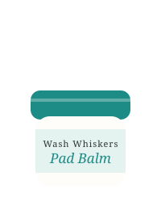
Pad Repair Balm60 g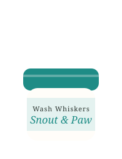
Snout & Paw Balm30 gNail & Pad Care
Tools and treatments for well-kept nails and soft, healthy pads.
- Silent nail grinder
- Quick-stop powder
- Pad hair trimmer
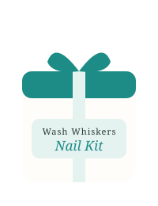
Calm Nail Kit3 itemsEar, Eye & Dental
Gentle face care for the delicate spots: tear-stain pads, ear wipes and dental foams that clean without brushing battles or water.
Ear Cleansing
Soft finger wipes and a gentle solution to lift wax and odour from outer ears.
- No alcohol, no sting
- Finger wipes for control
- Soothing aloe and witch hazel
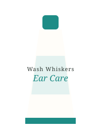
Gentle Ear Solution100 mlEye & Tear Stain
Pre-soaked pads that clean eye corners and fade stubborn tear stains over time.
- Saline-based and tear-free
- Fades reddish tear stains
- Individually soft pads
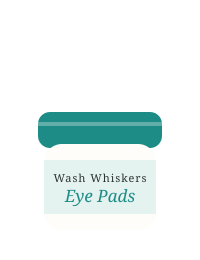
Bright Eye Pads60 padsWaterless Dental Foam
A foam that freshens breath and loosens plaque. Just apply it to the gums — no brush or rinse.
- No brushing needed
- Enzyme and green-tea formula
- Swallow-safe
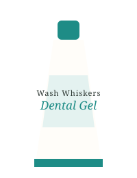
Dental Gel70 gFinger Brush Wipes
Textured dental wipes that slip over a finger to polish teeth gently.
- Textured polishing surface
- Mint-free, pet-friendly flavour
- Easier than a brush
Home & Odour
Pet-safe sprays and wipes for beds, crates, carriers and sofas. They break down odours with plant enzymes rather than covering them with perfume.
Bedding Refresh
A fabric mist for pet beds, blankets and sofas that breaks down odour at the source.
- Plant enzyme technology
- Safe on most fabrics
- No heavy perfume
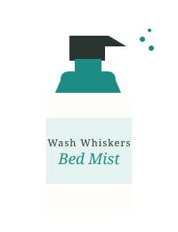
Cosy Bed Refresh500 mlOdour Neutraliser
A concentrated enzyme spray for accidents and stubborn smells.
- Breaks down urine odour
- Discourages re-marking
- Colour-safe
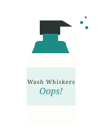
Oops! Enzyme Spray500 ml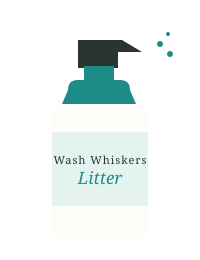
Litter Zone Spray300 mlCrate & Carrier Wipes
Large surface wipes for crates, carriers, bowls and car seats.
- Extra large and strong
- Food-surface safe
- No rinse needed
Grooming Accessories
Tools that make waterless cleaning even easier: towels, brushes and mitts.
- Ultra-absorbent microfibre towel
- Bamboo-handle brushes
- Long-lasting and washable
How waterless cleaning works
A four-stage process that delivers the results of a bath without its stress, mess or water use.
Apply
A foam, mist or powder is applied directly to the coat, focusing on soiled areas.
Massage
Plant-derived cleansers bind to dirt, oil and odour as the product is worked in.
Lift
A dry towel or brush lifts the product away, taking impurities with it.
Protect
Conditioning botanicals stay on the coat to keep it soft, fresh and protected.
Safety standards for pets and the people who care for them.
Our formulation and testing approach protects animals, the hands that groom them and the environment they live in.
Gentle formulation
Coconut-derived cleansers, oat, aloe and plant enzymes, with no sulphates or parabens.
Human-skin tested
Every product is dermatologically tested so it is safe for daily handling.
Animal-safe ingredients
Lick-safe, pH balanced and free from essential oils that are toxic to cats.
No animal testing
Our products are never tested on animals at any stage of development.
Trusted across the pet care ecosystem
Our solutions are built for everyday pet parents and for professional and institutional care settings.
Pet Parents
Simple, stress-free care at home.
Grooming Salons
Faster sessions with less water.
Veterinary Clinics
Gentle care for recovering pets.
Pet Retailers
A complete waterless range.
Shelters & Boarding
Hygiene at scale, without baths.
Interested in partnering with Wash Whiskers?
We work with distributors, grooming professionals and pet care businesses.
Let's start a conversation
For product information, partnerships or media enquiries, our team will respond within one business day.
Corporate Office
Reach out through any of the channels below, or send us a message using the form.
Hyderabad, Telangana, India
Frequently asked questions
What is waterless pet care?
It is a way of cleaning pets with rinse-free foams, mists, powders and wipes in place of a traditional water bath. Plant-based cleansers lift dirt and oil, which are then removed with a towel or brush.
Are Wash Whiskers products safe for the people using them?
Yes. Every formula is dermatologically tested on human skin, so it does not cause dryness, irritation or residue on the hands of pet parents and groomers.
Are the products safe for animals?
All products are pH balanced for animal skin, lick-safe and free from parabens, sulphates, harsh alcohol and essential oils that are toxic to cats.
Does Wash Whiskers test on animals?
No. Wash Whiskers is fully cruelty-free and never tests on animals, and our formulas avoid ingredients that harm animals or waterways.
Do you work with grooming salons, clinics and distributors?
Yes. We supply professional and institutional partners. Use the enquiry form and choose the relevant enquiry type, and our team will get back to you.
Where can I find your products?
Please contact our team with your location, and we will share the nearest stockist or partner details.